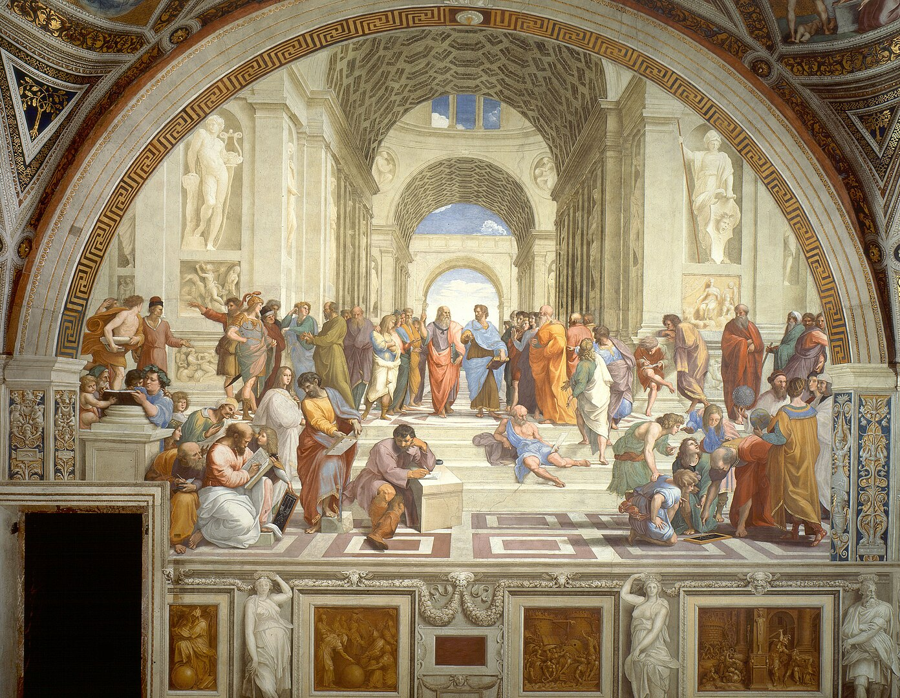

Школа Афин
Автор: Рафаэль Санти


«Школа Афин» — фреска Рафаэля, созданная около 1510 года для Апостольского дворца в Ватикане. Она представляет собой аллегорическое изображение философии.
В центре композиции — Платон и Аристотель, окружённые другими выдающимися мыслителями древности, такими как Сократ, Пифагор и Диоген. Каждый персонаж проработан с точностью и выразительностью.
Фреска восхищает архитектурной перспективой и символикой, а также высоким художественным мастерством. Она считается одним из важнейших произведений итальянского Возрождения.